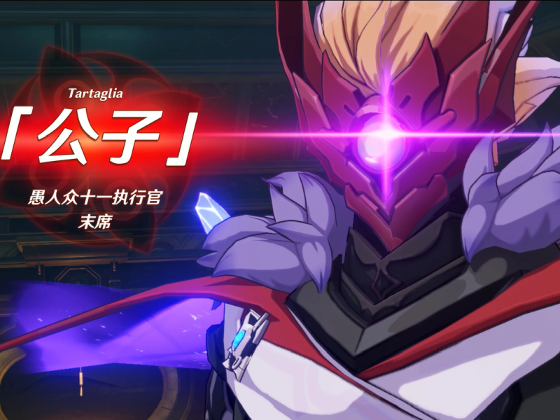
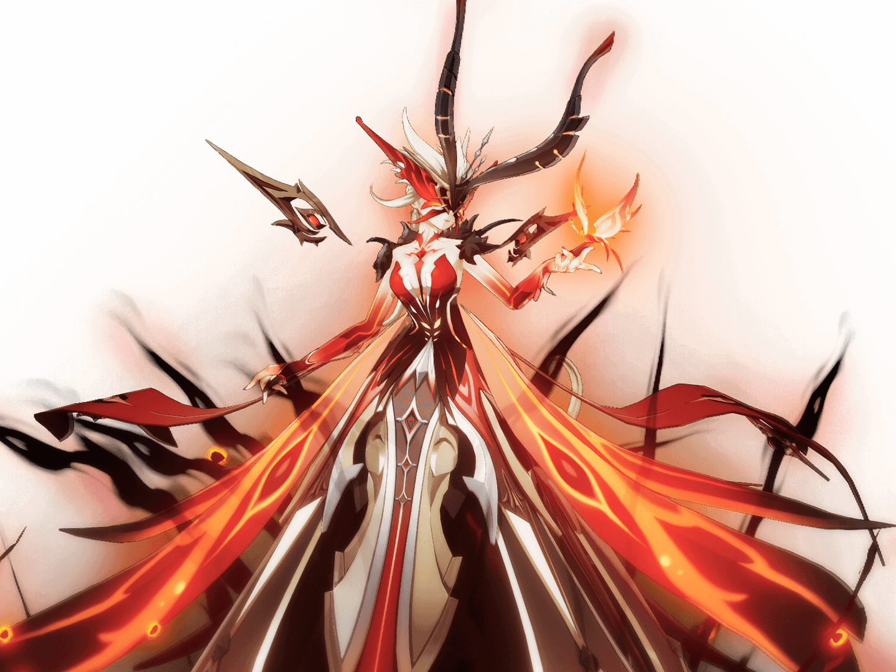

若陀龙王
若陀龙王，如同山岳一般长寿的古老巨龙。在难以追忆的年月里曾与岩港的帝君并肩，但最终反目，遭镇压于黑暗的地底。若陀龙王本来只是一块灵性的原石，是钟离将它从地底带出，并且把这块巨石雕刻成了巨龙，并且赋予了他眼睛。若陀龙王和钟离约定，将会和地面上的人类共处，如果违背约定，若陀龙王将会回到地下。在无比漫长的岁月中，它的力量渐渐流失，形态也因各种折磨而扭曲。枷锁的隐隐震响与龙祖低沉的怒吼，同记忆一般在山峦间回荡。

公子·达达利亚
达达利亚，至冬国外交使团愚人众十一执行官末席，代号“公子”，负责与璃月的外交。一个忠情战斗、忠实于身体感受的追逐者，其战绩威名远扬。
达达利亚是最年轻的愚人众执行官，也是最危险的愚人众执行官之一。然而，达达利亚似乎永远与他的同僚们不太合得来。作为最纯粹的战士，他在这个充满阴谋的集体中显得格格不入。温暖的朋友、无情的杀手…因其身份立场多变又叵测，人们很难找到一个精准的名字来称呼他。但在某些私密时刻，他会卸去所有头衔，卸去沾满阴谋的外壳，成为自己 。

女士---焚尽的炽炎魔女
愚人众执行官第八席的「女士」。 与行使邪眼之权能的其他愚人众不同，邪眼是抑制啃噬一切的烈火的器物。 比起厮杀用的兵器，说是刑拘道具才更为贴切。 而这就是漫长的岁月中积郁的余烬，冲破邪眼霜封后为她涂抹的扭曲妆容。 瞳仁中倒映这破晓的赤红，他最后展开烈焰之翼向黎明飞去。 「但那并不是曙光，亲爱的罗莎琳，那是焚尽一切的火海。」 在光芒中，一个声音这么对她说。 但这也没什么所谓，因为她心中明白，自己早已被烈火吞没。